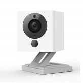

The wyze cam is a small indoor camera that packs tremedous amount of features at a very low price. 
Operation
The operation of the wyze cam is fairly straightforward. Everything is done throught their very well designed Android or IOS application.
Despite the low price of 20$ USD, it packs tremedous amount of features including:
- 1080 Full HD Video
- Live stream with 8x Digital Zoom
- Motion and Sound Sensor
- Night Vision
- 2-Way Audio
- Works with Alexa and Google Assistant
- Continuous Recording (Local MicroSD Card)
- Time Lapse
- Free, rolling 14-day cloud storage for events
Good
- Inexpensive
- Feature packed
Bad
- Indoor only (Not Weatherproof)
- Does not pan
Verdict
In essence, the Wyze Cam will sastisfy anyone basic surveillance needs. It is small, inexpensive but packs a tremedous amount of features. However, the camera does not pan. This limits its application to surface area that is static such as an entrance.